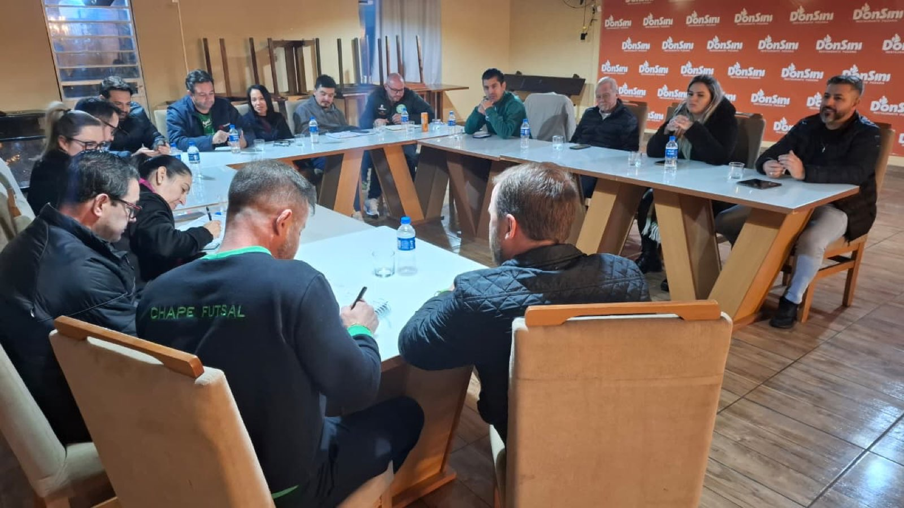
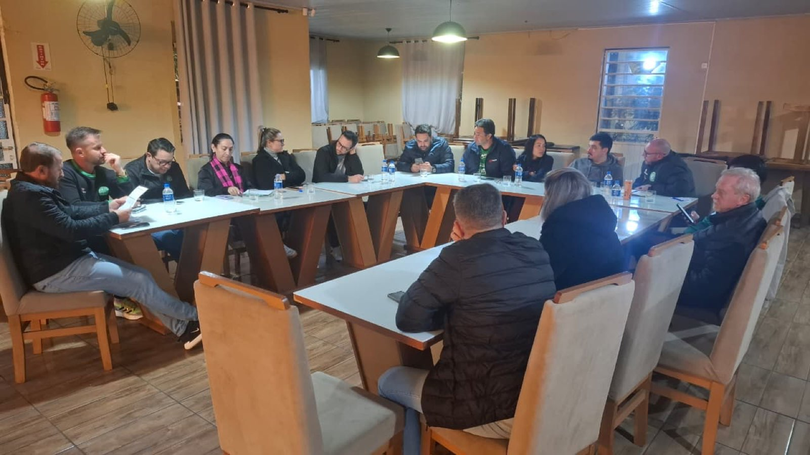

Está lançada a 3ª Feijoada da Chape Futsal! A organização do evento foi alinhada na noite desta segunda-feira (13/7), durante reunião entre diretoria, staff e apoiadores da equipe Prefeitura de Chapecó/Chapecoense/Unochapecó, no Restaurante e Pizzaria Donsini.

O almoço ocorrerá no dia 12 de setembro, a partir das 12h, no pavilhão novo do Parque de Exposições Valmor Lunardi (Efapi). A programação inclui atrações musicais, espaço infantil com brinquedos e exposição dos patrocinadores do clube. A direção lembra que os participantes devem levar pratos e talheres.
O valor do ingresso inteiro é R$ 60, enquanto a meia-entrada para crianças de 6 a 12 anos custa R$ 30. Menores de 6 anos têm gratuidade. Os tickets estão disponíveis para compra nas lojas Oficial da Chape Futsal e Ixap Sports, no DonSini, no site ingressojogo.com.br, pelo WhatsApp (49) 9975-1964, com os integrantes da equipe ou nos dias de partidas.

A Feijoada da Chape Futsal registra evolução no número de participantes a cada ano. A primeira edição, realizada em 2024, reuniu 1,2 mil pessoas. Em 2025, foram vendidos aproximadamente 2 mil bilhetes. Para este ano, o objetivo do Verdão das Quadras é atrair 2,5 mil pessoas no pavilhão.
Crédito das fotos: Chape Futsal